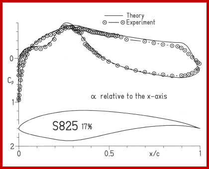
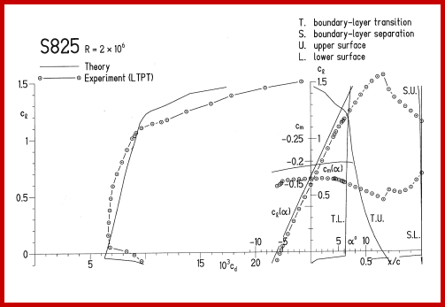

|
|
Verification
To verify the theory, several airfoils have been designed using the Eppler code and the majority have been tested in low-turbulence wind tunnels, including the Langley Low-Turbulence Pressure Tunnel (refs. 35 and 36), the low-turbulence wind tunnel of the Delft University of Technology Low Speed Laboratory (ref. 37), and The Pennsylvania State University low-speed, low-turbulence wind tunnel (ref. 38). See references 39-41, for example.


|
|
© 2000 Airfoils, Incorporated.